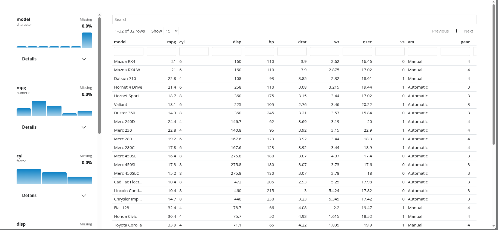

library(shinydataviewer)
library(shiny)
library(bslib)
#>
#> Attaching package: 'bslib'
#> The following object is masked from 'package:utils':
#>
#> pageshinydataviewer provides a reusable Shiny module for
viewing data with:
- a
reactabledata viewer - a variable summary sidebar
- Bootstrap 5 compatible styling via
bslib
The module supports data frames with numeric, integer, character,
factor, logical, Date, and
POSIXct/POSIXt columns. Non-finite numeric
values such as Inf, -Inf, and NaN
are excluded from numeric summary statistics and histogram bins.
Interface preview

The data viewer combines per-variable summary cards with a searchable table.
Minimal module
Use data_viewer_ui() when the viewer should manage its
own table card.
ui <- page_fillable(
theme = bs_theme(version = 5),
data_viewer_ui("viewer")
)
server <- function(input, output, session) {
data_viewer_server(
"viewer",
data = reactive(iris)
)
}
shinyApp(ui, server)Embedded card
Use data_viewer_card_ui() when the viewer belongs inside
another layout.
ui <- page_fillable(
theme = bs_theme(version = 5),
layout_columns(
col_widths = c(4, 8),
card(
card_header("Context"),
card_body("Supporting content")
),
data_viewer_card_ui(
"viewer",
title = "Dataset",
full_screen = FALSE
)
)
)
server <- function(input, output, session) {
data_viewer_server(
"viewer",
data = reactive(mtcars)
)
}
shinyApp(ui, server)Summary helper
The variable sidebar is backed by
summarize_columns().
summary_df <- summarize_columns(head(iris), top_n = 4)
summary_df[c("var_name", "type", "n_missing", "n_unique")]
#> var_name type n_missing n_unique
#> Sepal.Length Sepal.Length numeric 0 6
#> Sepal.Width Sepal.Width numeric 0 6
#> Petal.Length Petal.Length numeric 0 4
#> Petal.Width Petal.Width numeric 0 2
#> Species Species factor 0 1summarize_columns() returns one row per input column.
Its summary_stats and distribution_data
list-columns contain the precomputed payloads used by the viewer cards,
including detail statistics, categorical top-level counts, and compact
histogram metadata.